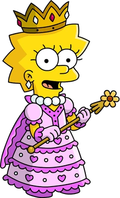

Simpson family

The Simpsons (often shortened to Simpsons) is an American animated sitcom created by Matt Groening for
the Fox Broadcasting Company.
The main characters are a satire of a working-class family, consisting of
Homer,
Marge, Bart, Lisa, and Maggie. The series lampoons many aspects of American culture, society, politics,
and history.
The cartoon made its debut as 60-second animated bumpers for The Tracey Ullman Show, with the first short
airing on April 19, 1987.
The shorts were then expanded into a full-length 30-minute television spin-off
by 20th Century Fox,
first airing on December 17, 1989. As of 2021, 32 seasons have aired, with the 33rd airing since September 26.
Abraham Jebediah "Abe" Simpson II, commonly known as Grampa Simpson or simply Grampa, (born 1902 in 1989; 1935 in 2022) is a major character in The Simpsons and a supporting character in The Simpsons Movie. He is the oldest patriarch of the Simpson family, ex-husband of Mona Simpson, father of Homer Simpson, Herbert Powell and Abbey, father-in-law of Marge Simp
son and paternal grandfather of Bart, Lisa and Maggie Simpson. He is also the ex-boyfriend of Jacqueline Bouvier.
- “Ahh!”
―Grampa's catchphrase
- “I'm Santa? Oh, now I'll never die!”
―Grampa Simpson[src]
- “Hi, David, I'm Grampa!”
―Grampa Simpson, Treehouse of Horror V[src]

Bartholomew "Bart" Jojo Simpson (born April 1[7] or February 23[8]) is the mischievous, rebellious,
misunderstood, disruptive and "potentially dangerous" oldest child of the Simpson
family in The Simpsons. He is the only son of Homer and Marge Simpson, and the older brother of Lisa and
Maggie.
- “Don't have a cow, man.”
―Bart's third catchphrase
- “I’m Bart Simpson, who the hell are you?”
―Bart's fourth catchphrase
- “I’m Bart Simpson, who the hell are you?”
―Bart's fourth catchphrase

Lisa Marie Simpson (born May 9)[9] is the elder daughter
and middle child of the Simpson family and one of the two tritagonists (along with Marge,) of The Simpsons
series.
- “Having never received encouragement, I'm not sure how it should sound, but here goes: I believe in you.”
―Lisa to Bart[src]
- “Having never received encouragement, I'm not sure how it should sound, but here goes: I believe in you.”
―Lisa to Bart[src]
- “Having never received encouragement, I'm not sure how it should sound, but here goes: I believe in you.”
―Lisa to Bart[src]
h1-загальний заголовок з назвою сторінки
img - Загальна фотка родини (картинка вантажиться за посиланням)
p - загальний опис серіалу
h2+a - заголовок з якорем який веде на сторінку персонажу. Хомер
img - з картинкою персонажу (картинку завантажити в проєкт)
р - опис персонажу
ul+li - з 2-3 основними фразами персонажу
h2+a - заголовок з якорем який веде на сторінку персонажу. Барт
img - з картинкою персонажу (картинку завантажити в проєкт)
р - опис персонажу
ul+li - з 2-3 основними фразами персонажу
h2+a - заголовок з якорем який веде на сторінку персонажу. Ліза
img - з картинкою персонажу (картинку завантажити в проект)
р - опис персонажу
ul+li - з 2-3 основними фразами персонажу